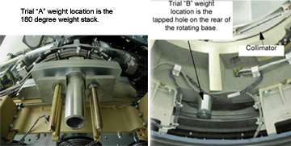

Illustration 3: Sample Weight Diagram

See Illustration 5 for example of entries for 107° weight stack. The 180° weight stack appears in the same manner.
| NOTE: | There is a weight diagram available via the [Weight Diagram] button in the GUI. See Illustration 3. The diagram shown on the product supersedes any listing in this procedure. Pay close attention to the 180° 25.4mm spacer and 3.2mm shim orientation. The holes are shifted to one side and should be installed with the holes closest to the edge on the bottom near the DAS. Newer systems have a secondary safety bar through the middle of the weights not shown in the example here. |
Illustration 3: Sample Weight Diagram
Refer to Illustration 4 for trial weight placement during sensitivity matrix generation process. The trial weight on the 180 stack is placed on the end of all existing weights. Do NOT remove weights before adding the trial weight.
Illustration 4: Trial Weight A and B Mounting Locations

The program will ask you to place each of the two trial weights one at a time during the process.
Trial weight A at 180° position must be installed over the top of the existing weight stack and nuts such that existing nuts are in recessed holes of trial weight. Install trial weight as shown in the Weight Diagram on the system. This is the configuration and weight components expected by the program.
Illustration 5: Request for Existing Weight Configuration

| NOTE: | The order of the balance weights as installed on the Gantry is very important. An entry of zero is valid if the particular weight type is not currently installed. |
The program will prompt for the number of specific weights in 107- and 180-degree locations. The order is labeled as "inner to outer" with inner referring to weights closest to the Gantry (rear) and outer as towards the table (front).